Form pada HTML digunakan untuk menerima input dari pengunjung website. Data yang sudah diinput biasanya dikirim dan diterima oleh suatu server untuk diproses menjadi suatu fungsi yang dibutuhkan.
Dalam pembuatan form di HTML, digunakan tag <form> beserta atribut yang dibutuhkan agar form tersebut dapat berfungsi dengan baik.
| 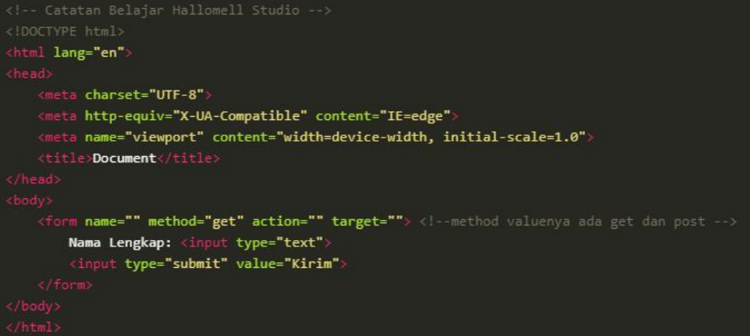 |
Elemen <input> merupakan salah satu elemen paling banyak dipakai dalam pembuatan HTML form. Elemen <input> dapat ditampilkan dalam berbagai jenis bentuk, tergantung dengan atribut 'type' yang digunakan.
Berikut adalah beberapa contoh dari elemen <input>:
| 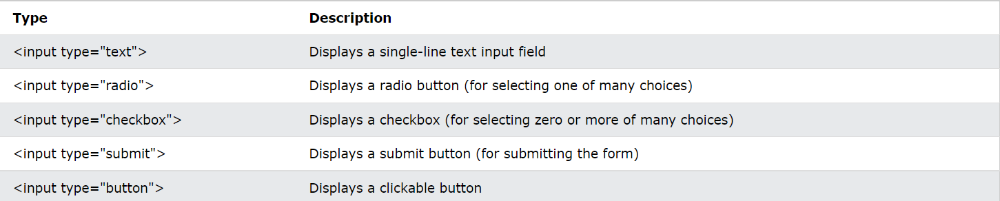 | |
| Contoh penggunaan berbagai macam input type beserta tampilannya dalam webpage: | |
| 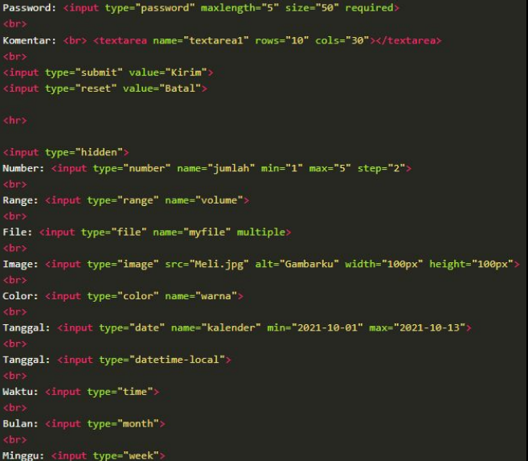 | 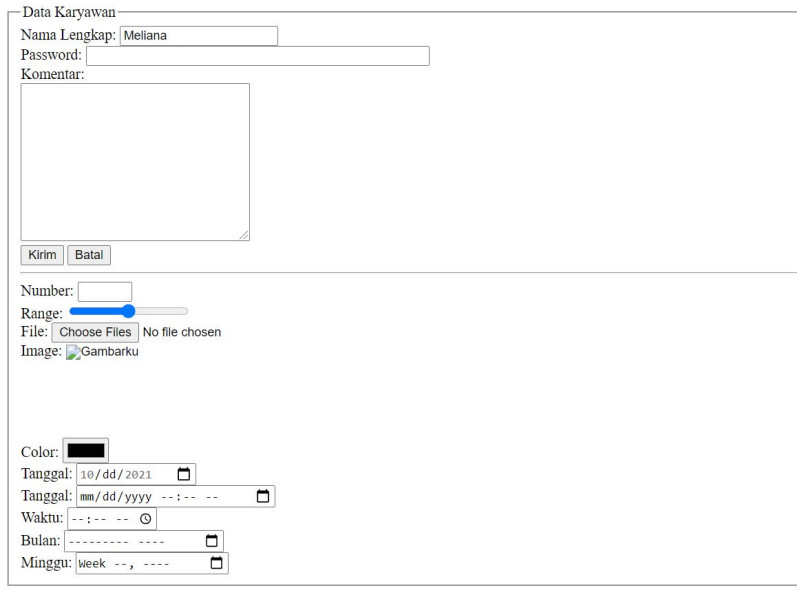 |
Radiobutton berfungsi sebagai objek pilihan, di mana pengunjung webpage dapat memilih hanya salah satu dari banyaknya pilihan yang tersedia di dalam radiobutton yang diberikan.
Tag yang digunakan dalam pembuatan radiobutton adalah <input type="radio">.
| Contoh pengetikan kode radiobutton dan hasilnya: | ||
| 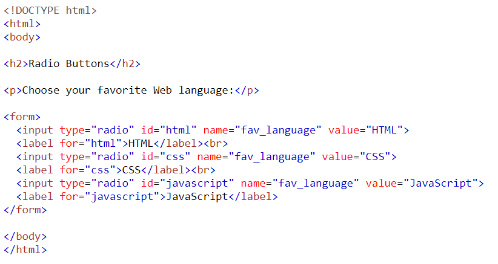 | 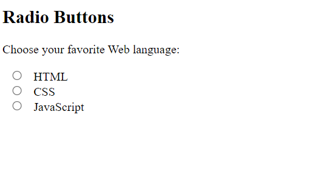 | |
Checkbox berfungsi sebagai objek pilihan, secara fungsi serupa dengan radiobutton, namun perbedaannya adalah dengan menggunakan checkbox, pengguna dapat memilih lebih dari 1 pilihan.
Tag yang digunakan dalam pembuatan checkbox adalah <input type="checkbox">.
| Contoh pengetikan kode checkbox dan hasilnya: | ||
| 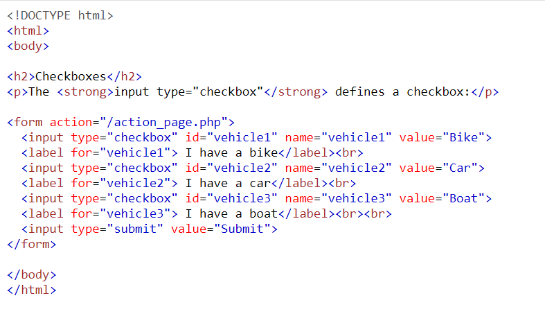 | 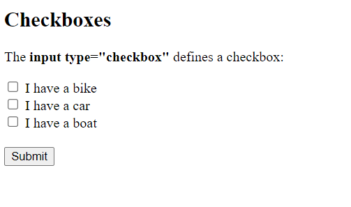 | |
Combobox, atau yang umum disebut <select> element, sering digunakan untuk membuat menu pilihan yang berbentuk dropdown.
| Contoh pengetikan kode combobox dan hasilnya: | ||
| 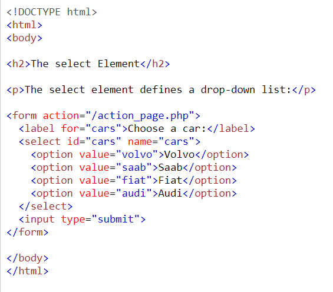 | 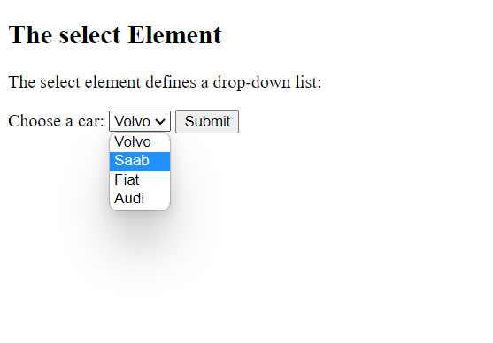 | |
PHP adalah bahasa pemograman yang digunakan untuk scripting dari bahasa pemograman HTML, Javascript dan CSS yang dieksekusi dari sisi server. Ada banyak kegunaan dari PHP itu sendiri, beberapa diantaranya adalah untuk mengumpulkan data dari input pengguna (form, dll), memunculkan konten dinamis, dan lain sebagainya.
| 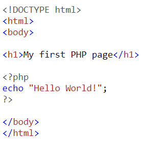 | 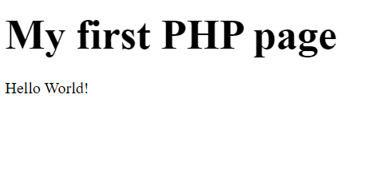 |
Untuk PHP Dasar, fungsi yang sering digunakan (terutama dalam pembuatan form) adalah 'echo' dan 'variable'. Echo adalah fungsi untuk menampilkan suatu tulisan pada webpage, sementara variable adalah fungsi untuk menyimpan suatu hasil input yang nantinya dapat digunakan untuk respon webpage ataupun operasi matematika.
| 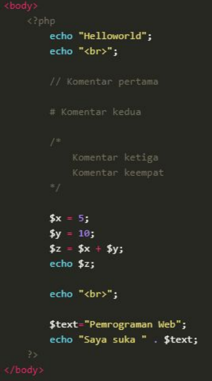 |
PHP umumnya digunakan dalam pembuatan form karena kemampuannya untuk menyimpan data dari hasil input yang dimasukkan oleh pengguna ke dalam form HTML.
| 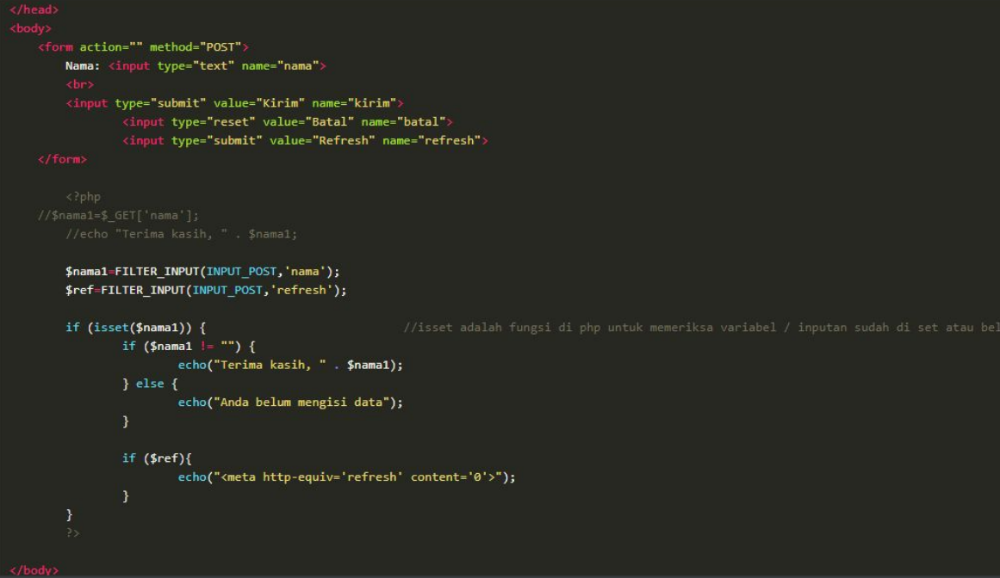 |